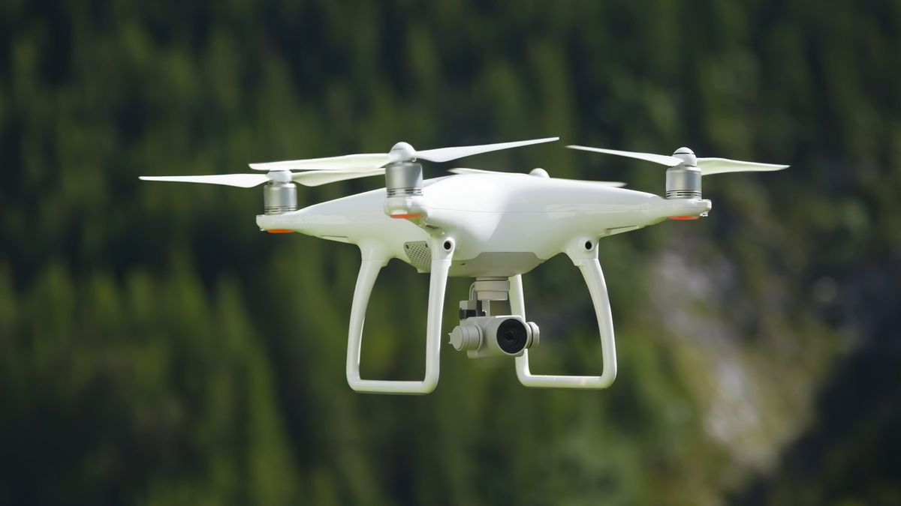

JCI SkyVision X7
Cinematic Series
Premium aerial cinema drone with 6K HDR camera, precise 3-axis gimbal and up to 40 minutes of flight time. Designed for filmmakers who need clean, detailed footage for professional projects.
Shop in Store